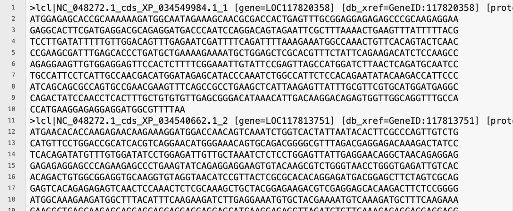
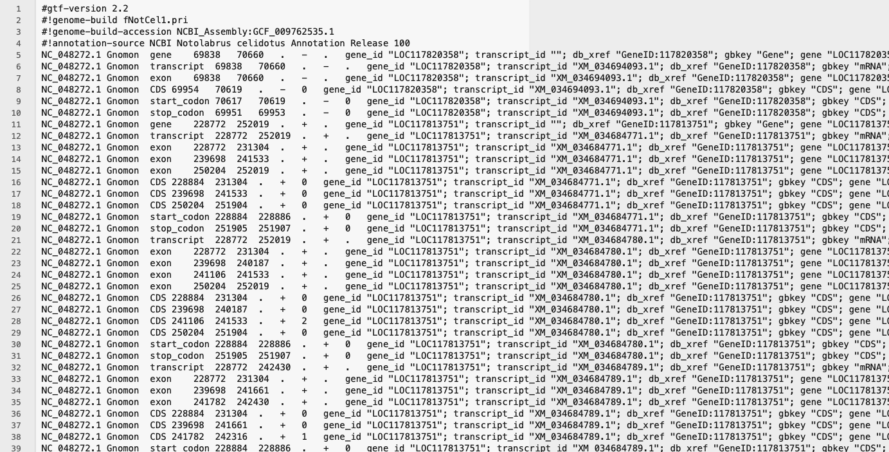

Genomic data wrangling and processing
Your data is now on a server/cloud/local computer, ready for analysis. Now what?
Command-line interface (CLI) vs graphical user interface (GUI)
Command line interface (CLI) and graphic user interface (GUI) are different ways of interacting with a computer’s operating system. They have different pros and cons. Most people are familiar with the GUI as it is the default interface for most software, particularly on Windows and Mac OS. When using the GUI, you see and interact with visual representations of files, folders, applications, and most other functions of your computer. When using the CLI, you work largely with text representations of software, files, folders, input and output. The shell is a program that allows you to control your computer by typing instructions on the CLI with a keyboard.
There are several reasons to learn how to use the CLI:
- For most bioinformatics tools, there are no graphical interfaces. If you want to work in metagenomics or genomics, you’re going to need to use the CLI/ shell.
- The shell gives you power and allows you to work more efficiently. Tasks that are repetitive (e.g. renaming hundreds of files) can be automated. Tasks that are tedious (e.g. testing a range of input parameters) can be simplified.
- To use remote computers or cloud computing, you often need to use the shell.
Here we will show you a quick introduction to using the shell to quality check your raw reads. For more on the shell, see our workshops on Introduction to Shell and Intermediate Shell.
Note: you’ll hear the terms ‘shell’, ‘bash’, ‘unix’, ‘terminal’ and ‘command-line’ used almost interchangeably. For beginners, you can think of them as essentially all the same thing! As you gain more computational skills, you can dig into the differences.
First, check that the data are not corrupt
Believe it or not, computers can make mistakes! When your data files are being copied over from the sequencing facility to cloud storage, errors can occur that cause your files to become corrupted. This is not always obvious based on file size or a quick look at the contents. The first thing you’ll want to do is run a checksum, which will output a fixed-length message of 16 bytes– a unique identifier of each file. The files should also come with the checksums run by the technician at the sequencing facility. Check out the section on Data Integrity in our GA shell workshop for more information on how to run this.
Understanding genomic file types
The files you will get back from the sequencing facility will most likely end in .fastq.gz
The .gz indicates it is a compressed gzip file. For most genomic analyses, you do not need to unzip these first–this saves you storage space, as unzipped files can be double or triple the zipped size!
The fastq indicates the file is in FASTQ format. FASTQ files are a text-based format that stores the raw read sequences, along with a quality score for each base.
The first 4 lines of a fastq file describe one sequence read:

The first line is the header information, beginning always with an @. This is the instrument-specific, run identifier and read identifiying information.
V350304715= instrument-specific
L3= lane 3 on the flow cell. Can be used for troubleshooting if something globally went wrong with sequencing.
C001= cluster identifier (can be used for troubleshooting, same as above).
R001= Read 1. All the reads in this file are read 1. If you have paired-end data, you’ll have a corresponding read 2 file.
00020454= unique identifier for that read./1= indicates this is a pair member. Only paired-end data have the/1or/2additional identifier.
Each instrument and chemistry will have slightly different header information. The main thing to look out for are indications of the data being read 1 or read 2 (indicates antisense or sense strand data, for protocols that can differentiate strandedness) and whether it is part of a mate pair (indicated by the /1 or /2)
The second line is the actual sequence. Count the number of bases –which read length was chosen for this dataset?
The third line is just a “+”. This can be optionally followed by the same sequence identifier (and any description) again.
The fourth line is the quality score. Each base in line 2 has a corresponding quality score, indicated by an ASCII character in line 4.
From left to right, these are the quality scores in increasing order of quality:
!"#$%&'()*+,-./0123456789:;<=>?@ABCDEFGHIJKLMNOPQRSTUVWXYZ[\]^_`abcdefghijklmnopqrstuvwxyz{|}~So, if a single base has a quality score of !, which corresponds to a Q-score of 0, this indicates exceptionally poor quality. The sequencing machine was not able to resolve which base it should be. Often these will be shown as N’s.
Conversely, if a single base has a quality score of I, which corresponds to a Q-score of 40, this indicates very high quality. The sequencing machine was “very confident” that the base called is correct (Q40 indicates an error rate of 0.0001, i.e., a 1 in 10,000 chance of the base being called wrong. I is near the upper end of typically achieved quality values, but higher is possible.
For more on quality scores, you can also read this Illumina guide here. Note there are different types of encoding, but you will most frequently encounter Phred+33.
We can assess the quality score across all reads using software called FastQC, and trim down reads to remove poorer quality bases below a set threshold (generally with newer sequence data, you can use Q30 or Q40 as a cut-off). We won’t cover trimming here, see our workshop on RNA-seq Data Analysis for a step-by-step guide.
Other genomic file types
We’ve talked about fastq and gz files types, but there are some other common genomic file types you should know about.
You should also be aware that the extension on the file type is largely there just so you as a human know what kind of file it is. When using the CLI, the computer does not care what the extension says.
| Extension | Name | Description |
|---|---|---|
.fasta or .fa, .fna, .faa |
FASTA, FASTA nucleic acid, FASTA amino acid | Contains sequence data. Each sequence starts with a single header line starting with a >, followed by the nucleotide (or amino acid in case of .faa) sequence on the second line. No quality encoding included. |
.bam .sam |
Binary/Sequence Alignment Map | Contains alignment information of your reads/sequences that are mapped against a reference sequence (e.g., genome). BAM are the compressed, computer-readable only version; SAM are human-readable but larger files. Somewhat interchangeable file types. |
.vcf |
Variant Call Format | Contains sequence variants called relative to a reference genome. Split into two sections; the header information and the records. See our Intro R workshop, section on VCF files. |
.gtf |
General Feature Format | Contains genome annotation data. |
Real examples:
FASTA file containing cds data from a genome, opened in a text editor: 
add screenshots!
VCF file opened in excel: 
GTF file opened in a text editor: 
FASTQC - quality scoring of raw reads
- fastqc in depth (use to teach intro shell )
Good genome, bad genome?
You will often hear geneticists refer (somewhat colloquially) to “good” and “bad” genome assemblies. But what does this actually mean? And how can you tell whether a species you are working on has a good genome assembly?
In practice, we assess genome assemblies using a few metrics that capture contiguity and completeness.
Common genome assembly metrics
Contiguity is often measured as contig and scaffold N50, which is the length cutoff for the longest contigs that contain 50% of the total genome length. In this era of long-read genome assemblies, a contig N50 over 1 Mb is generally considered good. Excerpt taken from PacBio article.
Also see Wiki entry on N50/L50.
Completeness is often measured using a BUSCO (Benchmarking Universal Single-Copy Orthologs) score, which measures completeness using sets of conserved, single-copy genes expected to be present in most species within a specified lineage.
Reported as percentages of complete, duplicated, fragmented, and missing genes. <- change to example.
Genome assemblies can be described more qualitatively as (in order of less to more complete):
- Contig-level – sequences are assembled but not ordered or oriented. Often can be thousands to hundreds of thousands of contigs.
- Scaffold-level – contigs linked together, often with gaps. None are placed (i.e., chromosome known) or localised (i.e., orientation on chromosome known).
- Chromosome-level – one or more chromosomes complete, but some unplaced scaffolds may be present.
- Complete genome - all chromosomes are resolved with no gaps. Not necessarily telomere-to-telomere (T2T).
See NCBI Glossary for Assembly level.
What do we mean by a “good” genome?
A good genome assembly is typically one that is:
Highly contiguous
Reads have been assembled into long sequences called contigs, ideally approaching full chromosome lengths.Biologically complete
Most expected genes are present (high BUSCO completeness).Structurally accurate
Large-scale errors such as mis-joins or collapsed repeats are minimised.
Assembly quality vs annotation quality
It is important to distinguish between:
Genome assembly i.e., the reconstructed DNA sequence itself, and the Genome annotation, which is the identification and labelling of genomic features, including gene structures (exons, introns, and CDS), non-coding RNAs (e.g., rRNA, tRNA and lncRNA), and associated identifiers such as gene_id, transcript_id, and database cross-references.
A genome can be well assembled but poorly annotated, or vice versa.
EXERCISES 🧠🏋️♀️ (6 mins):
How would you describe these genomes? Look at the assembly stats and make some notes of how ‘good’ you think each assembly is.
Human Genome assembly GRCh38.p14
 Note: RefSeq is the curated database. GenBank is the non-curated, anyone-can-submit-to database.
Note: RefSeq is the curated database. GenBank is the non-curated, anyone-can-submit-to database.

Jot down your thoughts before looking at the solution below:
Chromosome level - very high quality. busco score - very close to complete. very good genome
number of extra scaffolds and contigs is very low (470 s / 996 c - it can be thousands of extra so hundreds is pretty good!)
scaffold and contig N50. describe these!
Nematostella vectensis (sea anemone) Genome assembly ASM20922v1


Jot down your thoughts before looking at the solution below:
scaffold level - medium quality. but the N50 is below 1mb, at 472.6kb scaffold. not great! quite fragmented.
busco score pretty good despite lack of placed scaffolds. contig/scaffold N50 - high enough that most genes are resolved.
assembly itself not amazing, but annotation is probably good enough for gene level compariosn with other species.
Larger scale structural variants and synteny difficult or erroneous to resolve. -> is this true?
Here is the original paper for the curious: Putnam et al. 2007.
The authors claim the genome reveals “ancestral eumetazoan genomic organization”. How did they assess this and what conclusion did they make about the eumetazoan ancestor resemblance to modern vertebrates, sea anemones and prokaryotes? Do you think they had a ‘good’ enough genome to assess this?